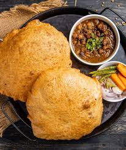

Home
Chole Bhature

Chole Bhature is a popular North Indian dish that combines spicy chickpea curry (chole) with fluffy deep-fried bread
(bhature). Loved for its rich flavors and hearty texture, it’s a perfect meal for breakfast, lunch, or dinner. This
dish is often associated with celebrations, street food culture, and the warmth of homemade meals. Packed with
proteins from chickpeas and served with tangy pickles, fresh onions, and yogurt, it’s a wholesome treat that’s both
indulgent and nutritious.
Ingredients
- 1 cup chickpeas (soaked overnight)
- 2 medium onions (finely chopped)
- 2 medium tomatoes (pureed)
- 1 tablespoon ginger-garlic paste
- 2 green chilies (slit)
- 2 tablespoons oil
- 1 teaspoon cumin seeds
- 1/2 teaspoon turmeric powder
- 1 teaspoon red chili powder
- 1 teaspoon coriander powder
- 1 teaspoon garam masala
- 1 teaspoon dry mango powder (amchur)
- Salt to taste
- Fresh coriander leaves for garnish
Steps
- 2 cups all-purpose flour (maida)
- 1/2 cup yogurt
- 1/2 teaspoon baking powder
- 1/4 teaspoon baking soda
- 1/2 teaspoon salt
- Water as needed (to knead dough)
- Oil (for deep frying)
Serve the hot chole with crispy bhature, and enjoy this delicious meal!